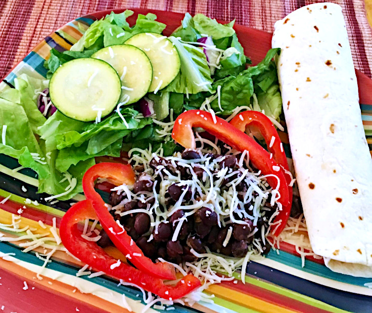

Black Beans

Black beans, jalapenos and flour tortillas make this mexican meal a vegetarian favorite.
The following serves four people and should take about 20 minutes to cook:
Ingredients
- 3 cups canned black beans
- 1 cup tomato sauce
- 1/4 cup canned diced jalapenos
- 2 tablespoons ranch salad dressing
- 4 ounces mozzarella cheese
- 2 ounces red bell pepper
- 4 flour tortillas
- 4 side salads
Steps
- Drain and rinse beans
- Heat in a saucepan with tomato sauce, jalapenos, and Ranch dressing.
- Grate cheese.
- Dice pepper.
- Top warm beans with grated cheese and diced pepper.
- Serve with side salad and tortilla.